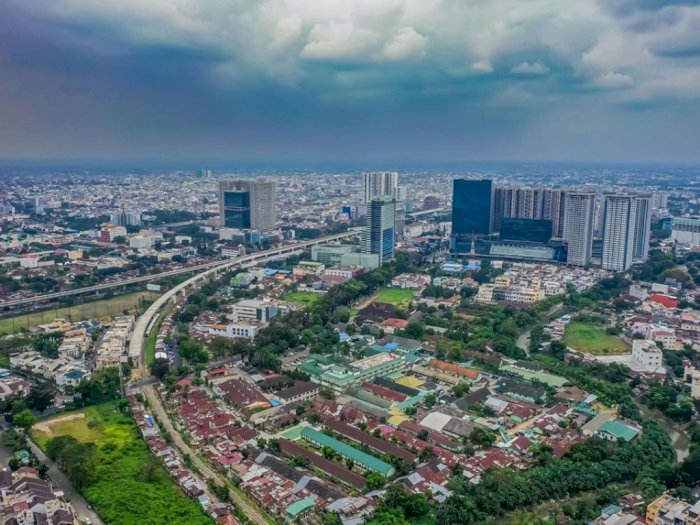

Profile
Medan adalah ibu kota provinsi Sumatra Utara, Indonesia. Kota ini merupakan kota terbesar ketiga di Indonesia setelah DKI Jakarta dan Surabaya serta kota terbesar di luar pulau Jawa.[6][7] Kota Medan merupakan pintu gerbang wilayah Indonesia bagian barat dengan keberadaan Pelabuhan Belawan dan Bandar Udara Internasional Kuala Namu yang merupakan bandara terbesar kedua di Indonesia. Akses dari pusat kota menuju pelabuhan dan bandara dilengkapi oleh jalan tol dan kereta api. Medan adalah kota pertama di Indonesia yang mengintegrasikan bandara dengan kereta api.
Berbatasan dengan Selat Malaka, Medan menjadi kota perdagangan, industri, dan bisnis yang sangat penting di Indonesia. Pada tahun 2020, kota Medan memiliki penduduk sebanyak 2.435.252 jiwa, dan kepadatan penduduk 9.522,22 jiwa/km2
Sejarah
Medan berasal dari kata bahasa Tamil Maidhan atau Maidhanam, yang berarti tanah lapang atau tempat yang luas, yang kemudian teradopsi ke Bahasa Melayu. Sejarah Medan berawal dari sebuah kampung yang didirikan oleh Guru Patimpus di pertemuan Sungai Deli dan Sungai Babura. Hari jadi Kota Medan ditetapkan pada 1 Juli 1590. Selanjutnya pada tahun 1632, Medan dijadikan pusat pemerintahan Kesultanan Deli, sebuah kerajaan Melayu. Bangsa Eropa mulai menemukan Medan sejak kedatangan John Anderson dari Inggris pada tahun 1823.
Peradaban di Medan terus berkembang hingga Pemerintah Hindia Belanda memberikan status kota pada 1 April 1909 dan menjadikannya pusat pemerintahan Karesidenan Sumatra Timur. Memasuki abad ke-20, Medan menjadi kota yang penting di luar Jawa, terutama setelah pemerintah kolonial membuka perusahaan perkebunan secara besar-besaran.
Geografis

Kota Medan memiliki luas 26.510 hektare (265,10 km²) atau 3,6% dari keseluruhan wilayah Sumatra Utara. Dengan demikian, dibandingkan dengan kota/kabupaten lainya, Medan memiliki luas wilayah yang relatif kecil dengan jumlah penduduk yang relatif besar. Secara geografis kota Medan terletak pada 3° 30' – 3° 43' Lintang Utara dan 98° 35' - 98° 44' Bujur Timur. Untuk itu topografi kota Medan cenderung miring ke utara dan berada pada ketinggian 2,5 - 37,5 meter di atas permukaan laut.
Berdasarkan klasifikasi iklim Köppen, Medan memiliki iklim hutan hujan tropis dengan musim kemarau yang tidak jelas.[11] Medan memiliki bulan-bulan yang lebih basah dan kering, dengan bulan terkering (Februari) rata-rata mengalami presipitasi sekitar sepertiga dari bulan terbasah (Oktober). Suhu di kota ini rata-rata sekitar 27 derajat Celsius sepanjang tahun. Presipitasi tahunan di Medan sekitar 2200 mm
Wisata
Ada banyak bangunan-bangunan tua di Medan yang masih menyisakan arsitektur khas Belanda. Contohnya: Gedung Balai Kota lama, Kantor Pos Medan, Menara Air Tirtanadi (yang merupakan ikon kota Medan), Titi Gantung - sebuah jembatan di atas rel kereta api, Kantor Pos, Bank Indonesia, Gedung London Sumatra dan Bangunan tua di daerah Kesawan.
Selain itu, masih ada beberapa bangunan bersejarah, antara lain Istana Maimun, Masjid Raya Medan, Masjid Raya Al Osmani dan juga rumah Tjong A Fie di kawasan Jl. Jend. Ahmad Yani (Kesawan).
Istana Maimun
Istana Maimun merupakan salah satu tujuan wisata sejarah di Kota Medan yang masih ada. Tempat untuk mengenal Istana yang dibangun di jaman Kesultanan Deli ketika mencapai puncak kejayaan saat berada di bawa kepemimpinan Sultan Makmun Al Rasyid Perkasa Alamsyah. Pada masa itu pula, tepatnya di tahun 1888 Istana Maimun dibangun. Istana Maimun saat ini telah menjadi destinasi wisata, baik bagi wisatawan lokal maupun luar negeri.
Masjid Raya Medan

Masjid Raya Medan atau Masjid Raya Al-Mashun (Aksara Jawi: مسجد راي ميدن) merupakan sebuah masjid yang terletak di Kota Medan, Indonesia. Masjid ini dibangun pada tahun 1906 dan selesai pada tahun 1909. Pada awal pendiriannya, masjid ini menyatu dengan kompleks istana. Gaya arsitekturnya khas Timur Tengah, India dan Spanyol. Masjid ini berbentuk segi delapan dan memiliki sayap pada bagian selatan, timur, utara, dan barat. Masjid Raya Medan ini merupakan saksi sejarah peradaban Melayu Deli, yang memiliki keterkaitan erat dengan Kesultanan Deli.